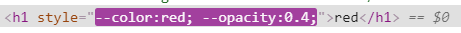
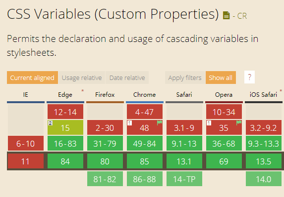

Vue 3.0
Evan You（尤雨溪）2018年11月16日在 Vue Toronto 的主题演讲中预演了 Vue 3 。利用现代浏览器支持的新功能，Vue 3 将成为我们已经了解和喜爱的 Vue.js 强大的的改进版本。
总结起来，Vue 3 以下方面值得我们期待 ：
- 更快
- 更小
- 更易于维护
- 更多的原生支持
- 更易于开发使用
完整的PPT： https://docs.google.com/presentation/d/1yhPGyhQrJcpJI2ZFvBme3pGKaGNiLi709c37svivv0o/edit#slide=id.p
让 Vue 更快
- 重写虚拟DOM
- 优化插槽生成
- 静态树提升
- 静态属性提升
- 基于Proxy的观察者机制
让 Vue 更小
- 优化Tree Shaking
使其更具可维护性
Vue 3 将带来更多可维护的源代码。 它不仅会使用 TypeScript ，而且许多软件包将被解耦，使所有内容更加模块化。
更多的原生支持
运行时内核也将与平台无关，使得 Vue 可以更容易地与任何平台（例如Web，iOS或Android）一起使用。
更易于开发使用
Observer 模块已被解压缩到自己的包中，允许您以新的方式使用它。
跟踪重新渲染的位置也会更容易。
改进对 TypeScript 的支持，允许在编辑器中进行高级的类型检查和有用的错误和警告。
实验性的 Hooks API
当我们需要在 Vue 中共享两个组件之间的行为时，我们通常使用 Mixins 。然而，Evan 正在尝试使用 Hooks API 来避免来自 Mixins 的一些问题，并且更适合使用惯用的 Vue 代码。
实验性的 Time Slicing 支持
当您有许多组件同时尝试重新渲染时，任何浏览器都可以开始变得很慢，从而使用户体验下降。
Evan展示了他如何尝试使用 Time Slicing，将 JS 的执行分解为几个部分，如果有用户交互需要处理，这些部分将提供给浏览器。
在CSS中使用JS变量
Vue 3.0出了新特性，可以在CSS中使用JS变量。
实践
1、首先我们先创建个支持vue3的vite项目：
npm init vite-app vars
2、进入到该文件夹安装依赖
cd vars && npm i
3、创建组件
<template>
<h1>{{ color }}</h1>
</template>
<script>
export default {
data() {
return {
// 变量声明
color: 'red',
opacity: 0,
};
},
mounted() {
setInterval(() => {
this.opacity >= 1 && (this.opacity = 0);
this.opacity += 0.2;
}, 300);
},
};
</script>
<style vars="{ color, opacity }">
h1 {
/* 在css中使用 */
color: var(--color);
/* 响应式数据 */
opacity: var(--opacity);
}
</style>
生成的html：

4、变量名称支持中文名。
// js
'透明度': 0
// css
opacity: var(--透明度);
5、可以放在scoped的<style> 标签，
<style vars="{ color }" scoped>
h1 {
opacity: var(--opacity);
}
</style>
生成的html：
<h1 data-v-0f9050b1="" style="--0f9050b1-opacity:0.2;">red</h1>
如果想要全局生效，则需要在
--后加上global:，如color: var(--global:color);。亲测这种写法实际上并没有生成--color，这个看后续vue3.0的实现，目前vue3.0功能还未稳定。
兼容性
CSS变量的兼容性：
